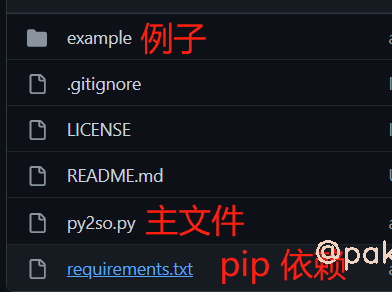
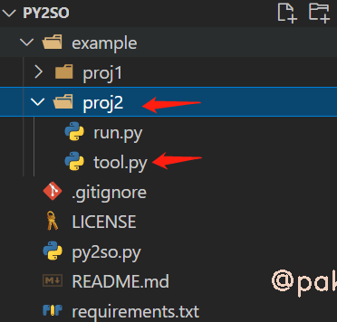
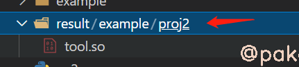
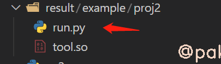
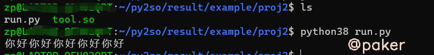
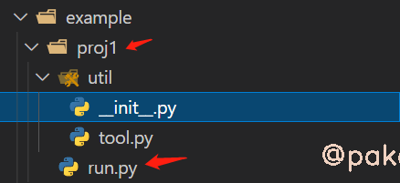
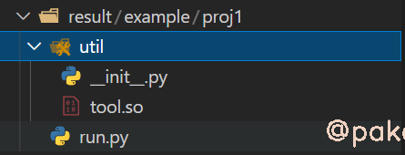
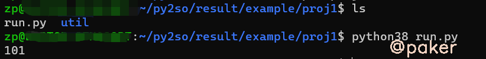

雪重
Python Developer
知识 汗水 灵感 机遇
2022年5月18日 python
python如何保护源代码？拒绝bp
本文通过使用py2so，在linux下将python代码编译为so文件，实现了“加密”保护源代码的需求，同时带来了性能提升。
项目地址：https://github.com/sixgad/py2so
1.常用加密方法
| 加密手段 | 优缺点 |
|---|---|
| 发行 .pyc 文件 | 简单方便，.py 能在哪里运行，.pyc 就能在哪里运行。有现成的反编译工具，破解成本低。 |
| 代码混淆 | 兼容性好，只要源码逻辑能做到兼容，混淆代码亦能。代码结构未发生变化，也能获取字节码，难度有限。 |
| pyinstaller | Windows 系统上，直接打包成 exe，方便分发和执行。 |
| Cpython | 生成的二进制 .so 或 .pyd 文件难以破解。兼容性稍差，对于不同版本的操作系统，可能需要重新编译。 |
2.使用教程
项目结构

安装
git clone git@github.com:sixgad/py2so.git
pip install -r requirements.txt
查看帮助
python py2so.py -h
py2so use help
optional arguments:
-h, --help show this help message and exit
-f FILE, --file FILE Python文件 (如果使用-f, 将编译单个Python文件)
-d DIRECTORY, --directory DIRECTORY Python项目路径 (如果使用-d参数, 将编译整个Python项目)
-i IGNORE, --ignore IGNORE 标记你不想编译的文件或文件夹路径 注意: 文件夹需要以路径分隔符号（\`/\`或\`\\\`，依据系统而定）结尾，并且需要和-d参数一起使用 例: -i main.py,mod/__init__.py,exclude_dir/
-r, --remove 清除所有中间文件，只保留加密结果文件，默认False
3.具体示例
- 编译单个文件，结果默认生成在result文件夹

python py2so.py -f example/proj2/tool.py -r

此时的tool.so可以被正常引用，我们把example》proj2下的run.py复制过来，运行run.py


2.编译整个python项目，忽略主文件run.py

python py2so.py -d example/proj1/ -i run.py -r

直接在result下得到完整的项目，tool.py已经被编译为tool.so，我们直接运行主文件run.py
